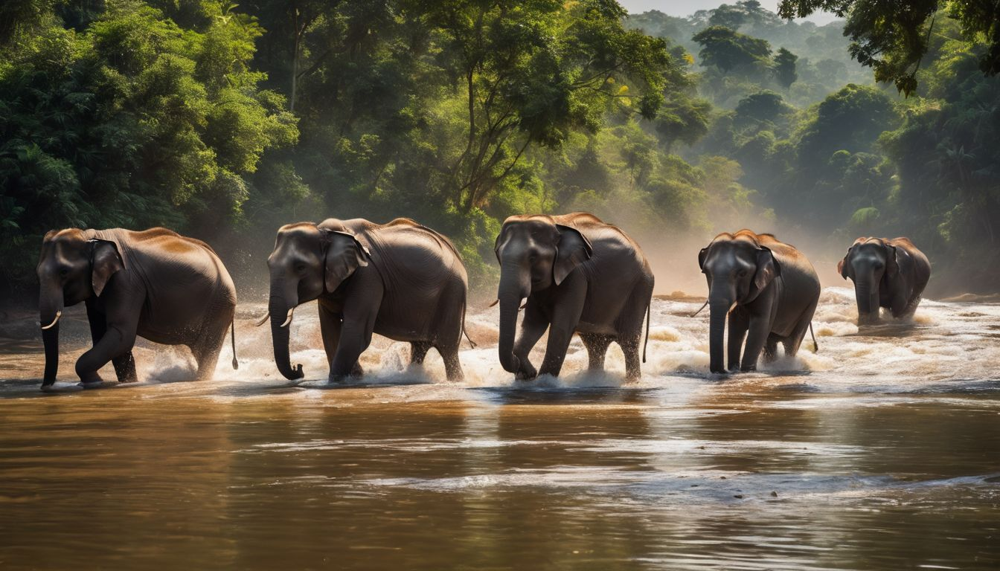

The wonder of sri lanka

Facts about Sri Lankan Elephants:
- Endangered Status: Sri Lankan elephants are classified as endangered due to habitat loss, human-elephant conflict, and poaching for ivory.
- Social Structure: They exhibit a complex social structure, forming close-knit family groups led by a matriarch.
- Feeding Habits: Sri Lankan elephants are herbivores with a diverse diet that includes grasses, leaves, fruits, and bark.
- Conservation Efforts: Various conservation initiatives are in place to protect these elephants, including the establishment of wildlife corridors to reduce human-elephant conflicts.
- Cultural Significance: Revered in Sri Lankan culture, elephants are often associated with religious ceremonies, processions, and traditional festivals, symbolizing strength, wisdom, and prosperity.